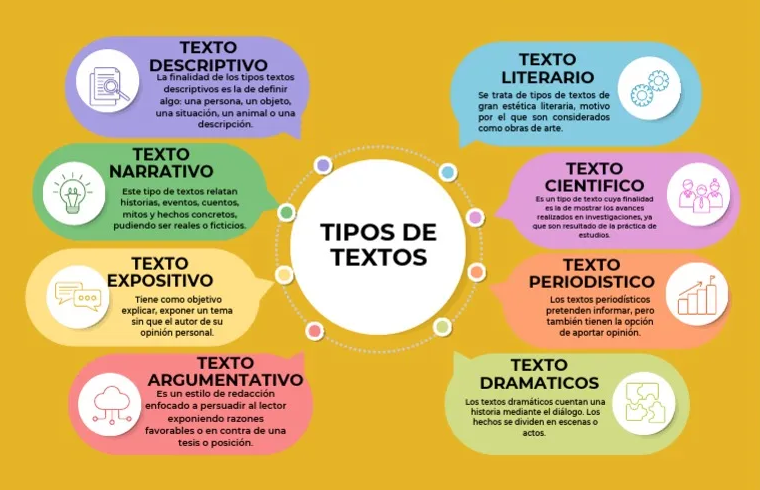

¿Qué tipos de textos existen y para qué sirve cada uno?
Texto descriptivo
Es aquel que se usa para describir un objeto. Se utiliza mucho en los e-commerce para que el usuario conozca mejor las características del producto.
Texto narrativo
A nuestro cerebro le encantan las historias. Un texto narrativo es aquel que nos cuenta una historia y que permite al lector identificarse con los personajes. El storytelling es su mejor ejemplo.
Texto publicitario
Son los textos orientados a la venta de un producto o servicio. La clave de este tipo de textos está en encontrar la necesidad del cliente. Puede hacerse de manera directa o sutilmente.
Texto digital
En la actualidad, todos los textos que leemos en un medio no analógico son textos digitales, pero, particularmente, son aquellos textos de consumo rápido y que se pueden difundir fácilmente.
Texto científico
Estos textos explican un hecho o teoría, por lo que deben ser corroborables, verificables y fiables. Suelen añadir informes, datos, estadísticas y fuentes reconocidas.
Texto periodístico
Los textos periodísticos nos hablan de un hecho u opinión periodística y su objetivo es informar y entretener. Su mejor exponente es la noticia o hecho noticioso, que se debe comunicar de manera veraz.
Texto literario
En este tipo de texto, la creatividad es la clave. Los textos literarios son de carácter artístico y están ligados al entretenimiento y al disfrute personal del lector. Un ejemplo pueden ser los cuentos o los relatos.
Texto instructivo
Son aquellos en los que aprendemos algo, como unas instrucciones, un tutorial o un texto académico que explica con precisión cómo hacer algo.

En definitiva, los diferentes tipos de textos nos aportan una amplia visión del conocimiento, el entretenimiento, el interés científico…, en función de su propósito, por lo que cada de un ellos son distintos.